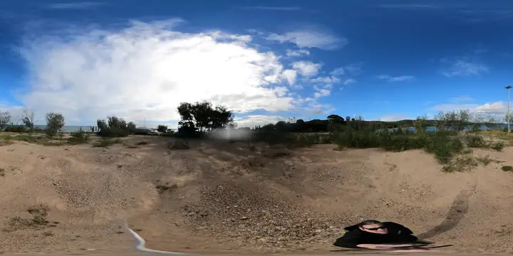

World Labs Marble
Useful for creating persistent 3D worlds from text, images, video, panoramas or coarse 3D structures. Best for walkthrough feeling and spatial imagination.
World Labs docsThis page is a current tool map, not a locked stack. Tools will change quickly, so source links matter.

Useful for creating persistent 3D worlds from text, images, video, panoramas or coarse 3D structures. Best for walkthrough feeling and spatial imagination.
World Labs docsUseful for text-to-3D and image-to-3D assets, then exporting formats such as GLB/OBJ/FBX depending on the task. Best for objects, fixtures and prototype parts.
Meshy text-to-3D docsUseful as the open workbench for importing GLB/glTF/OBJ assets, placing objects, checking scale, cleaning meshes and exporting review files.
Blender glTF docsUseful for phone-based 3D scanning, gaussian splats and meshes, especially early capture of spaces and objects.
Scaniverse quickstartUseful for photogrammetry, LiDAR-capable phone workflows and export experiments, with paid export limits to check.
Polycam export formatsUseful for photogrammetry from image sets and laser scan workflows where a more dedicated reconstruction path is needed.
RealityScanStart with image mock-up. If it survives review, make simple GLB objects and place them in Blender.
Start with World Labs/Marble-style world generation from a panorama, then compare with real walking footage.
Start in Meshy or Blender as an asset. Then test placement, visibility, wheelchair access and maintenance needs.
Skip pretty mock-ups. Ask for LiDAR, survey, CAD/GIS and qualified review.